也紀念我們永遠的朋友 李士傑先生（Shih-Chieh Ilya Li）。
用自由軟體 Plone 來架設網站(7)－版型調整
在前篇文章裡，透過 ZMI 和網頁介面，我們已經完成不少佈景主題的調整，有了這些知識和經驗，接下來，我們要在檔案系統裡，練習程式碼的調整方式，認識更多佈景主題的相關細節，包括 main_template.pt 的語法細節，Viewlet Manager 的調整方法，和 Viewlet 的註冊方式。
main_template.pt 是 Plone 的核心樣版檔案，它負責決定佈景主題的 layout 位置，像是表頁區塊、表尾區塊、主要內容區塊等，在 Plone 3.0 之後，視覺元件的再利用工作，不再採用 METAL 巨集的方法，而是改用 Viewlet Manager 和 Viewlet 的方式。本文將示範在檔案系統裡，管理 Viewlet Manager 的技巧。
預設的佈景主題
對一般使用者而言，Plone 4.x 的預設佈景主題是 Sunburst，不過，從開發者的角度來看，所有佈景主題的程式碼，預設是以一個稱為 Plone Default 的佈景主題為基礎，你可以進入 buildout-cache/eggs 目錄，在 Products/CMFPlone/profiles/default/viewlets.xml 找到 skinname="Plone Default" 的設定值，在 Products/CMFPlone/profiles/default/skins.xml 找到 default_skin="Plone Default" 和 skin-path name="Plone Default" 的設定值。
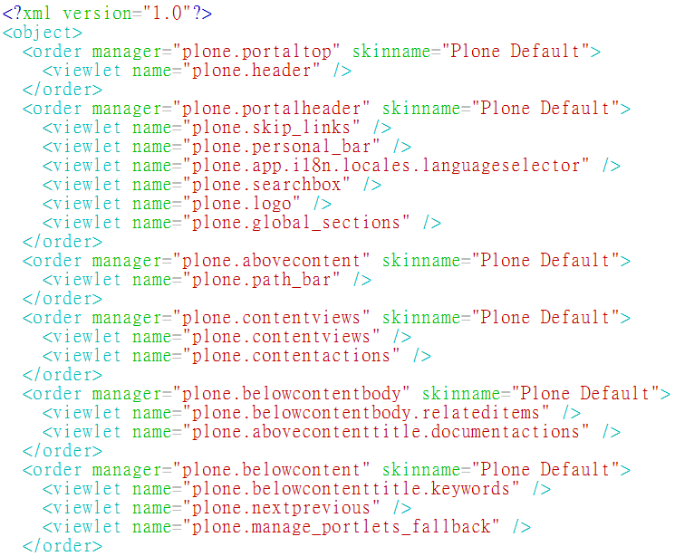
▲ 圖1 Plone Default 的 viewlets.xml 內容
Sunburst 就是以 Plone Default 為基礎，加上自製的 CSS 檔案而成，你可以在 plonetheme/sunburst/profiles/default/skins.xml 找到 skin-path name="Sunburst Theme" based-on="Plone Default" 的設定值。
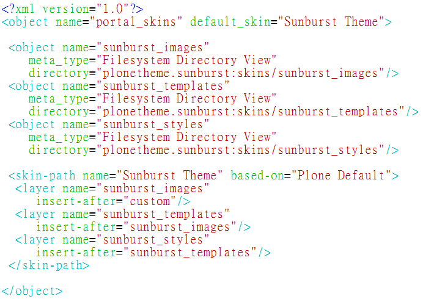
▲ 圖2 Sunburst 的 skins.xml 內容
除了 Sunburst 之外，還有一個稱為 Plone Classic 的佈景主題，也是以 Plone Default 為基礎，它的目錄在 plonetheme/classic 裡。
利用 Plone Default 的程式碼為基礎，是維護升級相容度的慣例作法，這種作法足以應付多數情況的需求。
建立模組專案
佈景主題是 Plone 的模組專案，同樣可以透過 paster 來建立，不過，我們改用 zopeskel 程式，它是包了糖衣的 paster 程式，使用 plone3_theme 參數，再接上 plonetheme.mytheme 專案名稱，就能建立新的模組，如圖3 所示。
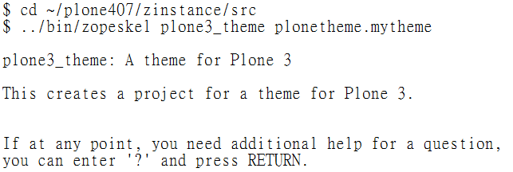
▲ 圖3 使用 zopeskel 建立 plone3_theme 專案
接著會出現數個問題，我們只要指定 Skin Name 就行，以填寫 MyTheme 為例，安裝模組後，在 ZMI 的 portal_skins 裡，會看得到 MyTheme 的 Skin 選項。最簡化的情況下，其餘問題都按 Enter 就行，如圖4 所示。
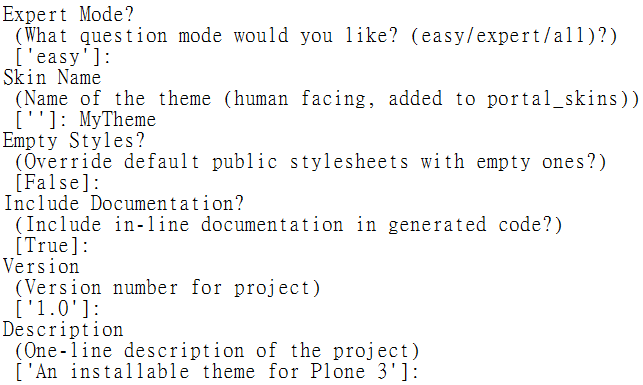
▲ 圖4 模組專案問題的回覆範例
想要安裝啟用 plonetheme.mytheme，把它寫進 buildout.cfg 檔案，如圖5 所示。
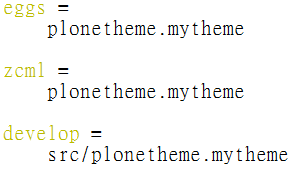
▲ 圖5 plonetheme.mytheme 的 buildout.cfg 範例
執行 bin/buildout 之後，可以在 Site Setup 看到這個模組，代表已經可以啟用它，如圖6 所示。
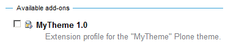
▲ 圖6 plonetheme.mytheme 成為可安裝模組
不過，剛建立的 plonetheme.mytheme 非常單調，若此時啟用它，反而會弄亂佈景主題，如果遇到弄亂的情況，可以到 Theme settings 裡，手動指定 Default theme 為 Sunburst Theme 後，就能恢復。
視覺元件技術項目
Plone 視覺元件架構裡，最底層的技術項目，彼此之間的關連性，可以用圖7 來表示。
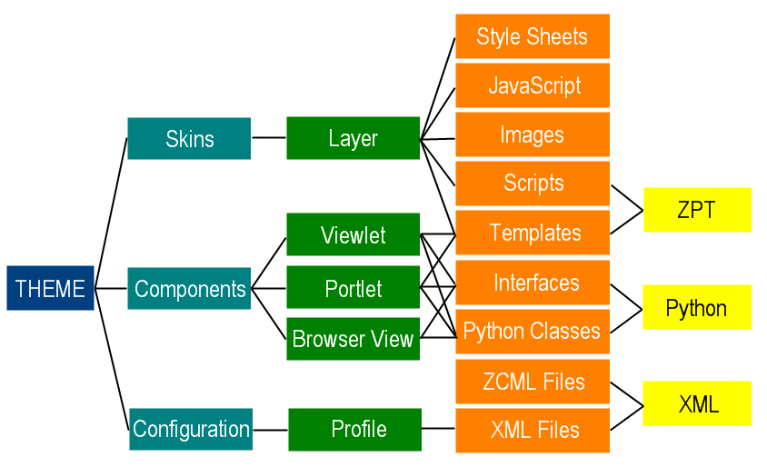
▲ 圖7 視覺元件的關連示意
對照 plone3_theme 專案的檔案目錄樹狀圖，更容易了解上述技術項目的關係，如圖8 所示。我們把 plonetheme.mytheme.egg-info、setup.cfg、setup.py 之類的檔案從樹狀圖裡移除，因為它們屬於 Python egg 的設定內容，暫時不需要理會。
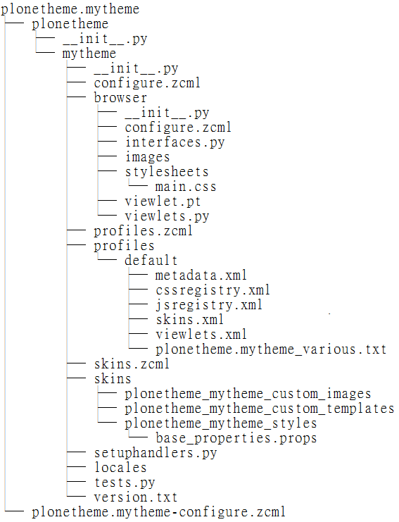
▲ 圖8 plone3_theme 專案的檔案系統樹狀圖
首先要關注的，是 plonetheme/mytheme 目錄裡的 configure.zcml 檔案，它註冊了模組的起始資訊，包括通知系統導入其他 ZCML 檔案或目錄，以＜include package=".browser /＞為例，當中的 . （點符號） 代表和 configure.zcml 同樣位置的目錄，如圖9 所示。
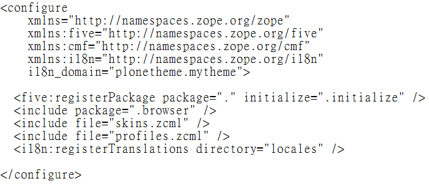
▲ 圖9 plonetheme.mytheme/configure.zcml 範例
常見的佈景主題修改工作，例如調整 Viewlet 的顯示與否、順序位置等，只需要修改 Viewlet Manager 的設定值，更複雜的調整工作，例如自訂型別的顯示方式，則需要註冊新的 Viewlet Manager、Viewlet、Browser View 等，接著，我們將示範修改的方法。
Viewlet Manager 管理方式
從 Zope 3.2 開始，content provider 是產生網頁內容的元件，通常以 Page Template 型式存在，在前文裡，我們介紹 main_template 是控制 Viewlet Manager 的重要檔案，它的預設位置在 Products/CMFPlone/skins/plone_templates/main_template.pt，這個檔案只呼叫 Viewlet Manager，再由 Viewlet Manager 管理 Viewlet 的細節，包括註冊、順序、顯示方式等。
以檔案裡＜div tal:replace="structure provider:plone.portaltop" /＞為例，provider 表示式是配合 Zope 3 而生的新語法，用來呼叫 content provider，像 Viewlet 和 Viewlet Manager 是兩個常見的 content provider。
所有的 Viewlet Manager 和 Viewlet 定義在 plone.app.layout 模組的 viewlets 目錄裡，在 viewlets/configure.zcml 檔案可以找到定義值，範例如圖10 所示。
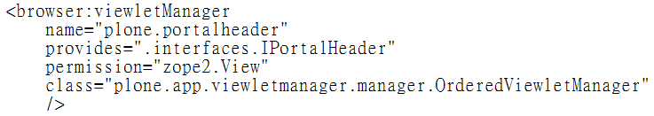
▲ 圖10 Viewlet Manager 的定義範例
範例裡的 IPortalHeader 是一個 marker interface，實作這個介面的 Viewlet Manager 名稱是 plone.portalheader，它將管理 plone.skip_links、plone.searchbox、plone.logo、plone.global_sections、plone.personal_bar 這幾個 Viewlet，範例如圖11 所示。
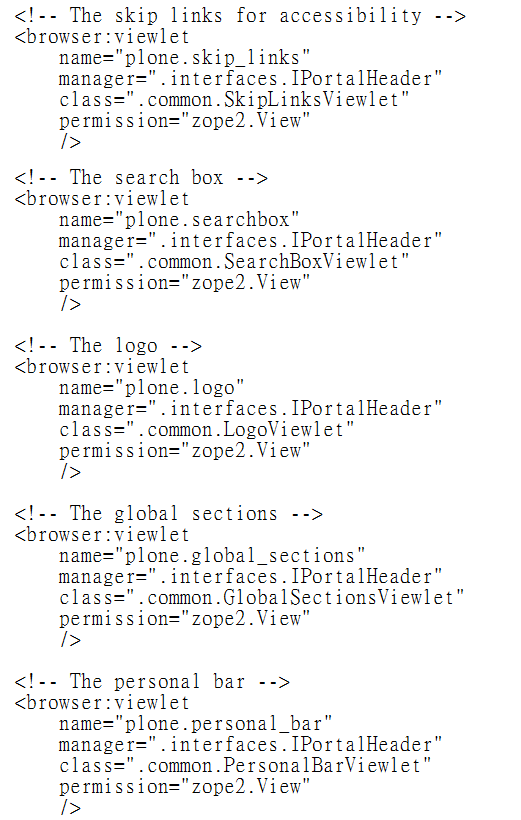
▲ 圖11 Viewlet 的定義範例
範例裡的＜browser:viewlet /＞使用 manager=".interfaces.IPortalHeader" 的話，就是歸屬 plone.portalheader 的 Viewlet。以 plone.logo 這個 Viewlet 為例，它的 Python Class 定義在 viewlets/common.py 檔案，內容如圖12 所示。
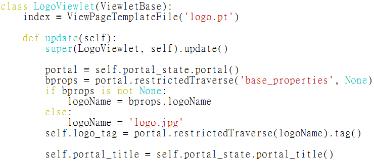
▲ 圖12 plone.logo 的 Python Class 範例
範例裡的 index = ViewPageTemplateFile('logo.pt') 代表 LogoViewlet 會呼叫 logo.pt 檔案，回傳 Page Template 的執行結果，其程式碼內容如圖13 所示。
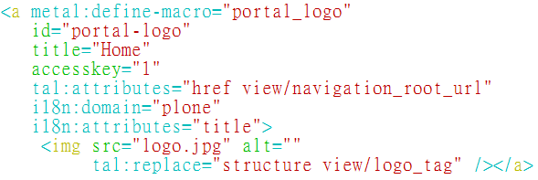
▲ 圖13 logo.pt 的 Page Template 內容
範例裡的 tal:attributes="href view/navigation_root_url" 代表 href 的屬性值，將指定為 view/navigation_root_url，其中的 view 代表 plone.logo 的執行結果，同樣的道理，tal:replace="structure view/logo_tag" 也是要讀取另一個 plone.logo 的執行結果，它的程式碼在圖12 裡看得到。
找不到 navigation_root_url 的程式碼嗎? 由於 LogoViewlet 是繼承 ViewletBase 的 Python Class，這些變數值在 ViewletBase 裡已經定義好，同時，你也會看到 ViewletBase 實作了 zope.viewlet.interfaces.IViewlet 介面，如圖14 所示。
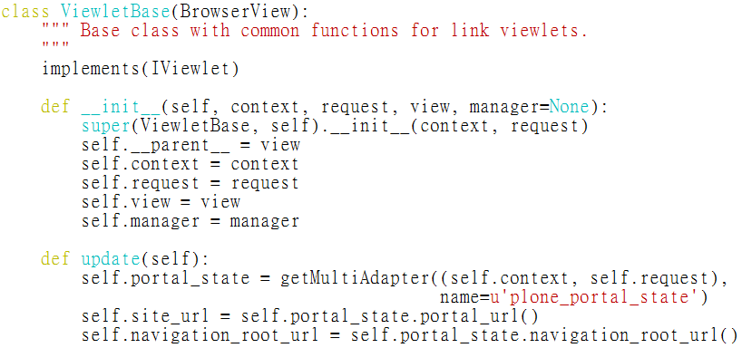
▲ 圖14 ViewletBase 的 Python Class 內容
值得一提的是，除了呼叫 Python Class 的方式，Viewlet 還可以直接呼叫 Page Template 的內容，使用 template="portal_header.pt" 之類的方式，如圖15 所示。
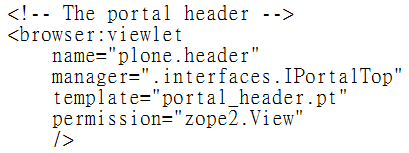
▲ 圖15 Viewlet 呼叫 Page Template 的定義範例
調整 Viewlet 的順序和顯示
我們在圖10 看到 Viewlet Manager 是 OrderedViewletManager 的 instance，這代表它所管理的 Viewlet 可以按照順序存取，預設的順序值記錄在 Products/CMFPlone/profiles/default/viewlets.xml 檔案裡，如圖16 所示。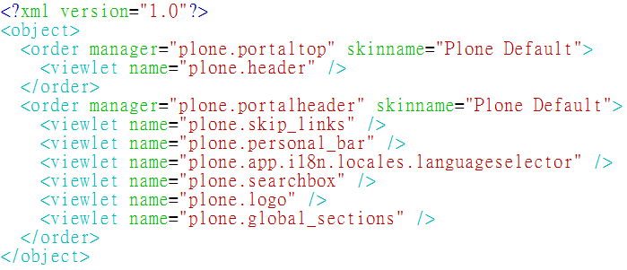
▲ 圖16 Plone Default 的 viewlets.xml 範例
那麼，如何在我們的 plonetheme.mytheme 模組，調整 Viewlet 在 Viewlet Manager 裡的順序呢？第一種方式，是全數列舉法，直接複製 Products/CMFPlone/profiles/default/viewlets.xml 內容，放到 plonetheme/mytheme/profiles/default/viewlets.xml 裡，最後再按需要進行編輯。
第二種方式，則是部份列舉法，利用 based-on="Plone Default" 語法，取得 Plone Default 的順序值後，再個別指定 Viewlet 的順序，例如想把 plone.logo 移到 plone.portalheader 的最上方，範例如圖17 所示。
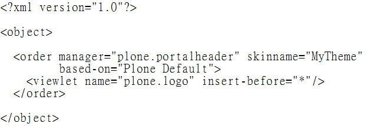
▲ 圖17 調整 plone.logo 順序的設定範例
想要將 plone.searchbox 隱藏起來，可以用＜hidden /＞語法，範例如圖18 所示。
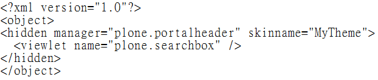
▲ 圖18 隱藏 plone.searchbox 的設定範例
日後需要再顯示 plone.searchbox 的話，可以在＜hidden /＞裡使用 remove 語法，範例如圖19 所示。
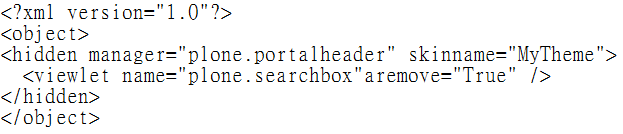
▲ 圖19 重新顯示 plone.searchbox 的設定範例
新增 Viewlet
假設我們想在 plonetheme.mytheme 模組，新增一個 Viewlet，併在 plone.portalfooter Viewlet Manager 裡，顯示貢獻者的資訊。仿照已知的運作原理，首先，可以在 browser/viewlets.py 檔案裡建立一個 Python Class，並配合一個 viewlet.pt 檔案來顯示 Page Template 內容，如圖20 所示。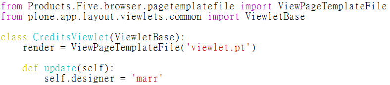
▲ 圖20 自製 Viewlet 的 Python Class 範例
viewlet.pt 的程式碼內容，利用 tal:content="view/designer" 來顯示 designer 的變數資訊，除了 i18n 語法待日後介紹外，其餘都是單純的 HTML 內容，如圖21 所示。
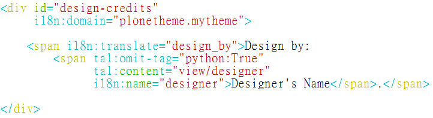
▲ 圖21 自製 Viewlet 的 Page Template 範例
接著，在 plonetheme/mytheme/browser/configure.zcml 註冊新的 Viewlet，例如使用 mytheme.credits 當作名稱，如圖22 所示。
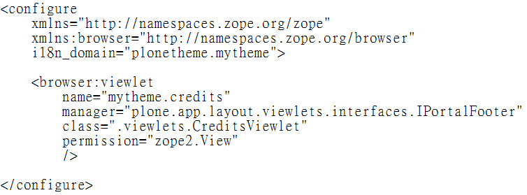
▲ 圖22 註冊自製的 Viewlet 範例
在 plonetheme/mytheme/profiles/default/viewlets.xml 指定 Viewlet 的順序，例如放在 plone.colophon 之後，如圖23 所示。
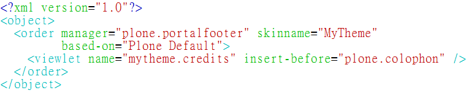
▲ 圖23 指定自製 Viewlet 順序的範例
結論
Viewlet 和 Viewlet Manager 把 Plone 的視覺元件，有效地組織起來，在本文裡，我們練習幾個常見的調整工作，在檔案系統裡直接管理程式碼，包括註冊 Viewlet、顯示或隱藏 Viewlet。認識視覺元件的運作原理後，透過這些管理工具和調整技巧，我們可以控制佈景主題的每一項細節。值得一提的是，之前範例裡出現 i18n 或 locales 的設定值，都跟語系在地化工作有關，將在日後的篇幅介紹。想要建立佈景主題，除了上述的傳統方式外，Plone 4.1 預計將導入新的架構方法，讓我們直接利用靜態 HTML 網頁，加上規則定義，即時產生內容與佈景主題整合後的網頁。這項新進展，可以提供另一條途徑，吸引更多網頁設計人員參與 Plone 的開發。
您也許有興趣閱讀以下文章:
- 用自由軟體 Plone 來架設網站(10)－連接資料庫 - 2011-08-05
- 用自由軟體 Plone 來架設網站(9)－多媒體結合 - 2011-07-25
- 用自由軟體 Plone 來架設網站(8)－內容查詢 - 2011-07-12
- 用自由軟體 Plone 來架設網站 (6)－動態網頁 - 2011-06-09
- 用自由軟體 Plone 來架設網站 (5)－元件架構 - 2011-05-20
- 用自由軟體 Plone 來架設網站 (4)－建立專案 - 2011-05-04
- 用自由軟體 Plone 來架設網站 (3)— 內部設定 - 2011-04-25
- 用自由軟體 Plone 來架設網站 (2)— 內容管理 - 2011-04-11
- 用自由軟體 Plone 來架設網站 (1)— 基礎安裝 - 2011-03-21
專欄總覽


E-Mail：contact@openfoundry.org Address：台北市南港區研究院路2段128號 中央研究院資訊科學研究所 . 隱私權條款. 使用條款